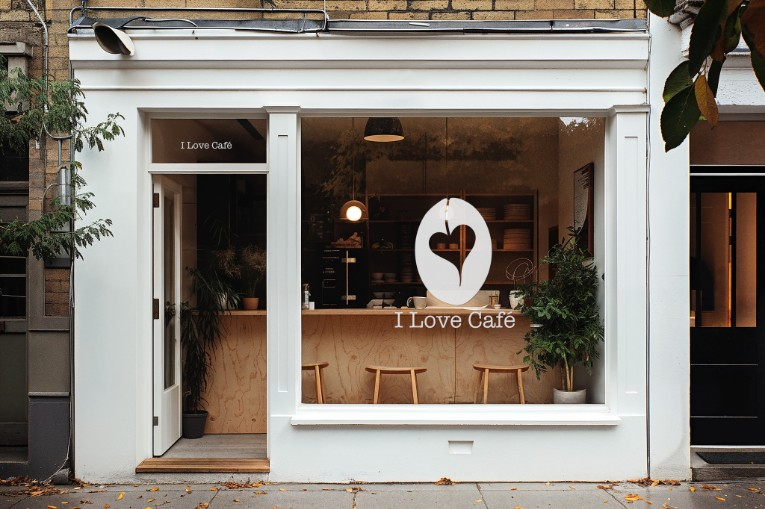
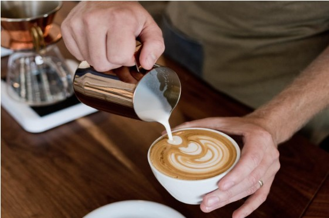
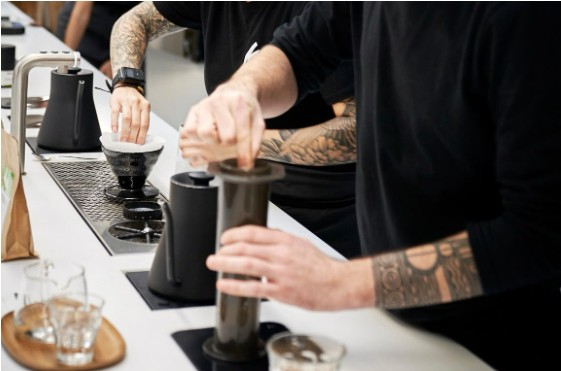
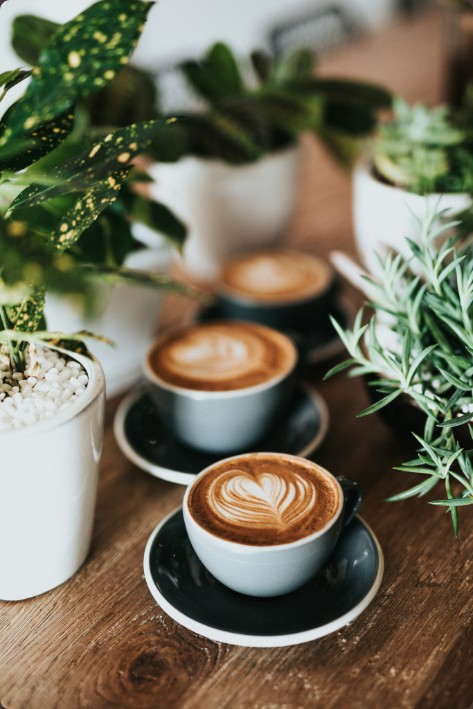
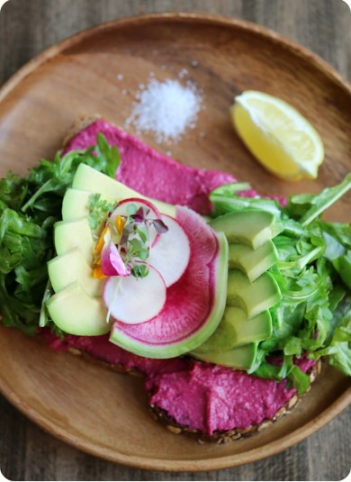

Carefully Sourced
We work with partner roasters and seasonal suppliers so every cup and plate starts with ingredients we trust.
Built for slow mornings, focused afternoons, and everyday coffee rituals.
We created our cafe to offer more than just coffee--a welcoming space where people can slow down, focus, and connect. Inspired by student life and everyday routines, our goal is to provide a comfortable environment with quality drinks and a modern, relaxed atmosphere.


A comfortable environment paired with high-quality coffee, a simple choice but an extraordinary experience.
We are a small team passionate about creating a cafe that feels both professional and personal. From preparing drinks to designing the space, we focus on making every visit comfortable and enjoyable for our customers.
Dialing in espresso, pouring latte art, and keeping every cup consistent.
Preparing fresh pastries, brunch plates, and seasonal specials each day.
Welcoming regulars, guiding first-time guests, and making the space feel easy.

OUR SPACE
Every detail is designed to feel easy to settle into: warm wood, soft light, generous tables, and a counter team that remembers the small things. Come for a quick espresso, stay for an unhurried afternoon.



We work with partner roasters and seasonal suppliers so every cup and plate starts with ingredients we trust.
Pastries, brunch elements, and daily specials are prepared in small batches for freshness and consistency.
Our space is built for repeat visits: quiet corners, quick pickup, thoughtful service, and room to breathe.
DAILY RHYTHM
Morning Fresh espresso, croissants, and quiet seats for the first work session.
Midday Brunch toasts, cold brew, and quick pickup for a gentle reset.
Afternoon Cupcakes, tea, and warm light for conversations that linger.